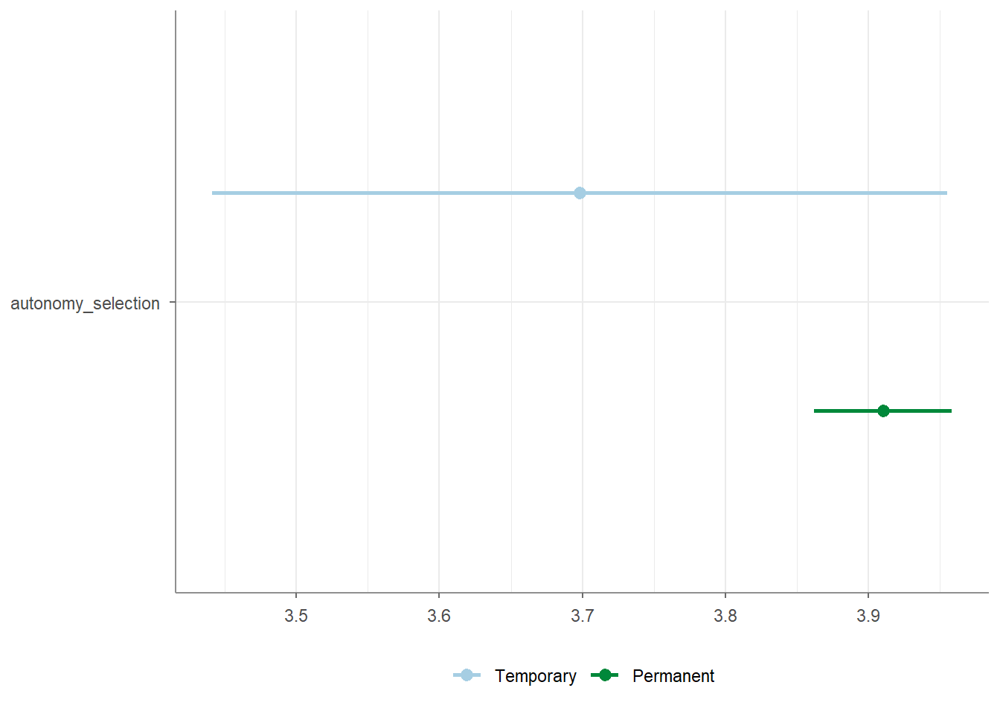
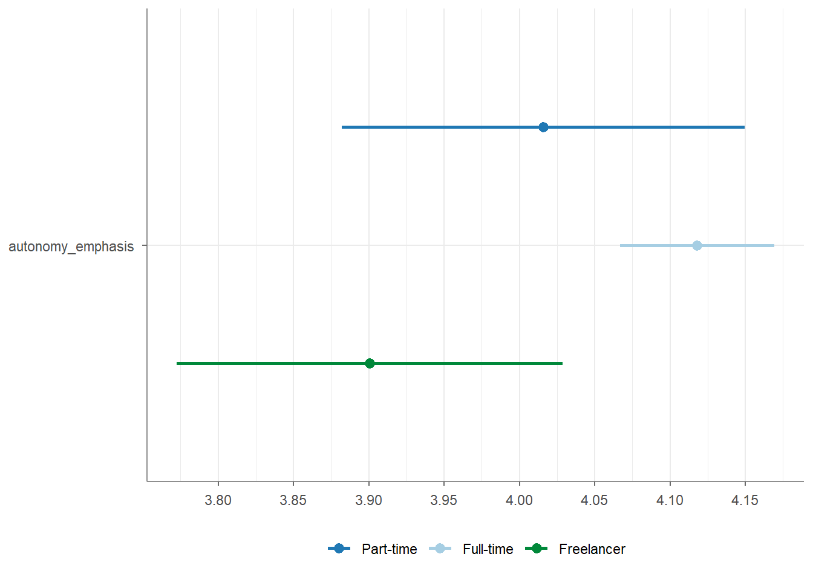
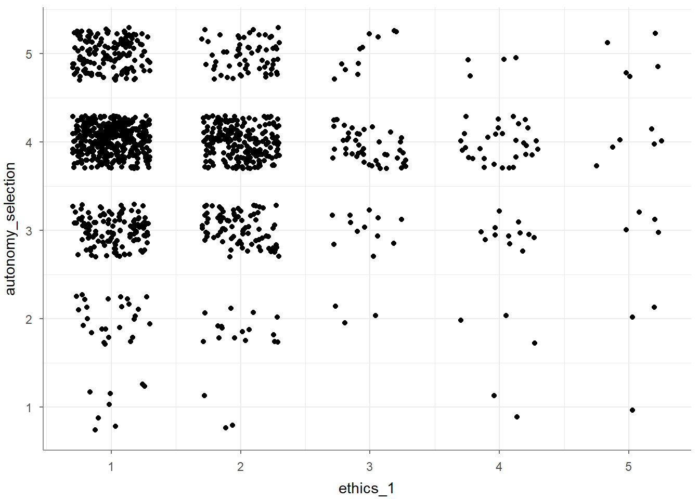
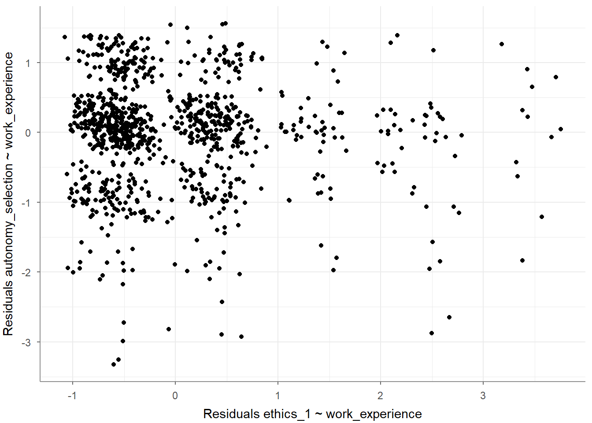
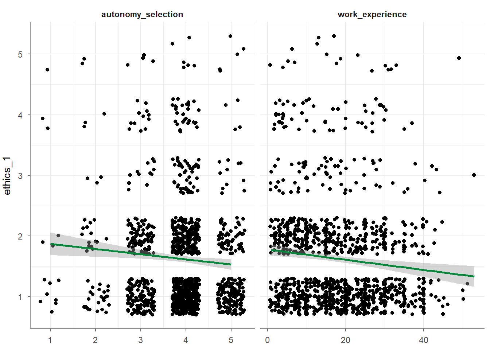
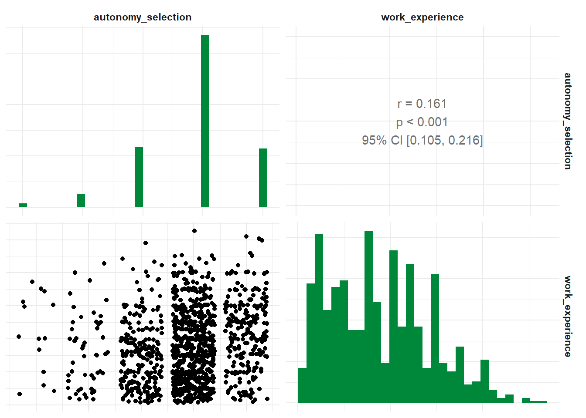
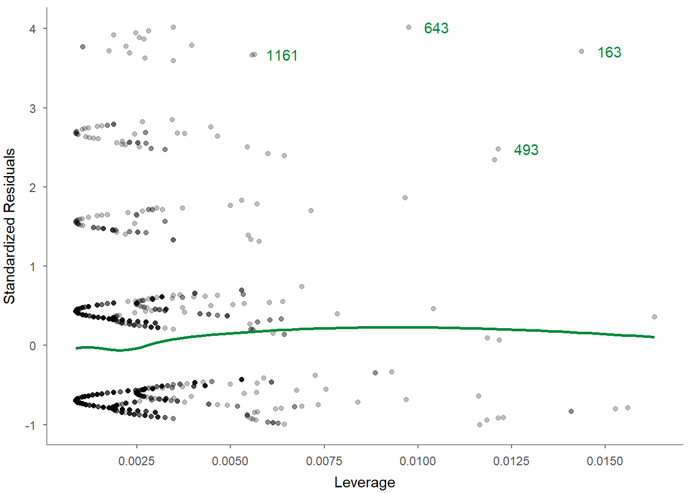

9 Tutorial: Inferential statistics with tidycomm
After working through this tutorial, you’ll…
- run a chi-squared test and inspect Cramer’s V with
crosstab(); - run independent-samples and one-sample t-tests with
t_test(); - conduct one-way ANOVAs and post-hoc comparisons with
unianova(); - calculate bivariate and partial correlations with
correlate(); - estimate and inspect linear regression models with
regress(); - use
visualize()and R’s help system to inspect and communicate results.
The GESIS workshop assumes basic familiarity with the ideas behind common descriptive and inferential statistics. The focus here is therefore on how to run these analyses reproducibly in R with tidycomm, inspect their output, and connect them to the tidy workflow used throughout this tutorial.
We will again use the Worlds of Journalism example data included in tidycomm:
9.1 How to run significance tests
9.1.1 crosstab()
The ‘crosstab()’ function also offers a chi_square argument that, when
set to TRUE, will calculate the chi-square test and Cramer’s V.
## # A tibble: 3 × 5
## employment Local Regional National Transnational
## * <chr> <dbl> <dbl> <dbl> <dbl>
## 1 Freelancer 23 36 104 9
## 2 Full-time 111 287 438 66
## 3 Part-time 15 32 75 4
## # Chi-square = 16.005, df = 6, p = 0.014, V = 0.082Remember that you can access the full documentation of this function
using the help() function, which will give you access to additional
arguments / parameters and run examples of the function:
9.1.2 t_test()
The t_test() function is used either to calculate a one-sample t-test
or to compute t-tests for one group variable and specified test
variables. If no variables are specified, all numeric (integer or
double) variables are used. t_test() by default tests for equal
variance (using a Levene test) to decide whether to use pooled variance
or to use the Welch approximation to the degrees of freedom.
You can provide an independent (group) variable and a dependent variable and the t-values, p-values and Cohen’s d will be calculated.
## # A tibble: 1 × 12
## Variable M_Permanent SD_Permanent M_Temporary SD_Temporary Delta_M t df
## * <chr> <num:.3!> <num:.3!> <num:.3!> <num:.3!> <num:.> <num> <dbl>
## 1 autonom… 4.124 0.768 3.887 0.870 0.237 2.171 995
## # ℹ 4 more variables: p <num:.3!>, d <num:.3!>, Levene_p <dbl>, var_equal <chr>Remember that you can always save your analysis into an R object and
inspect it with View(). This is very helpful if the resulting output
is larger than your screen:
You can also specify more than one dependent variable:
## # A tibble: 2 × 12
## Variable M_Permanent SD_Permanent M_Temporary SD_Temporary Delta_M t
## * <chr> <num:.3!> <num:.3!> <num:.3!> <num:.3!> <num:.> <num:>
## 1 autonomy_emp… 4.124 0.768 3.887 0.870 0.237 2.171
## 2 ethics_1 1.568 0.850 1.981 0.990 -0.414 -3.415
## # ℹ 5 more variables: df <dbl>, p <num:.3!>, d <num:.3!>, Levene_p <dbl>,
## # var_equal <chr>If you do not specify a dependent variable, all suitable variables in your data set will be used:
## # A tibble: 11 × 12
## Variable M_Permanent SD_Permanent M_Temporary SD_Temporary Delta_M t
## * <chr> <num:.3!> <num:.3!> <num:.3!> <num:.3!> <num:.> <num:>
## 1 autonomy_se… 3.910 0.755 3.698 0.932 0.212 1.627
## 2 autonomy_em… 4.124 0.768 3.887 0.870 0.237 2.171
## 3 ethics_1 1.568 0.850 1.981 0.990 -0.414 -3.415
## 4 ethics_2 3.241 1.263 3.509 1.234 -0.269 -1.510
## 5 ethics_3 2.369 1.121 2.283 0.928 0.086 0.549
## 6 ethics_4 2.534 1.239 2.566 1.217 -0.032 -0.185
## 7 work_experi… 17.707 10.540 11.283 11.821 6.424 4.288
## 8 trust_parli… 3.073 0.797 3.019 0.772 0.054 0.480
## 9 trust_gover… 2.870 0.847 2.642 0.811 0.229 1.918
## 10 trust_parti… 2.430 0.724 2.358 0.736 0.072 0.703
## 11 trust_polit… 2.533 0.707 2.396 0.689 0.136 1.369
## # ℹ 5 more variables: df <dbl>, p <num:.3!>, d <num:.3!>, Levene_p <dbl>,
## # var_equal <chr>If you have an independent (group) variable with more than two levels,
you can also specify the levels that you want to use for your
t_test():
## # A tibble: 1 × 12
## Variable `M_Full-time` `SD_Full-time` M_Freelancer SD_Freelancer Delta_M t
## * <chr> <num:.3!> <num:.3!> <num:.3!> <num:.3!> <num:.> <num>
## 1 autonom… 4.118 0.781 3.901 0.852 0.217 3.287
## # ℹ 5 more variables: df <dbl>, p <num:.3!>, d <num:.3!>, Levene_p <dbl>,
## # var_equal <chr>Finally, t_test() by default tests for equal variance (using a Levene
test) to decide whether to use pooled variance or to use the Welch
approximation to the degrees of freedom. This is an example for the use
of Welch’s approximation to account for unequal variances between
groups:
## # A tibble: 1 × 12
## Variable M_Permanent SD_Permanent M_Temporary SD_Temporary Delta_M t df
## * <chr> <num:.3!> <num:.3!> <num:.3!> <num:.3!> <num:.> <num> <dbl>
## 1 autonom… 3.910 0.755 3.698 0.932 0.212 1.627 56
## # ℹ 4 more variables: p <num:.3!>, d <num:.3!>, Levene_p <dbl>, var_equal <chr>You can also run a one-sample t-test (also called: location test) by
providing a variable and checking whether the mean of this variable is
equal to a provided population mean mu:
## # A tibble: 1 × 9
## Variable M SD CI_95_LL CI_95_UL Mu t df p
## * <chr> <dbl> <dbl> <dbl> <dbl> <dbl> <dbl> <dbl> <dbl>
## 1 autonomy_selection 3.88 0.803 3.83 3.92 3 37.7 1196 6.32e-206Finally, you can visualize your test results by calling the
visualize() function:

To access the full documentation / help:
9.1.3 unianova()
The unianova() function is used to compute one-way ANOVAs for one
group variable and specified test variables. If no variables are
specified, all numeric (integer or double) variables are used.
Additionally, unianova() also conducts a Levene test just like the
t_test() function to check the assumption of equal variances. If the
data doesn’t meet this assumption, the function will switch to using
Welch’s test.
For PostHoc tests, Tukey’s HSD is the default choice. However, if the assumption of equal variances isn’t met, the function will instead automatically use the Games-Howell test.
unianova works similarly to t_test(), i.e., you specify an
independent (group) variable followed by one or more dependent
variables.
## # A tibble: 1 × 8
## Variable F df_num df_denom p eta_squared Levene_p var_equal
## * <chr> <num:.> <dbl> <dbl> <num> <num:.3!> <dbl> <chr>
## 1 autonomy_emphasis 5.861 2 1192 0.003 0.010 0.175 TRUEProvide only an independent variable to use all suitable variables in your data set as dependent variables:
## # A tibble: 11 × 9
## Variable F df_num df_denom p omega_squared eta_squared Levene_p
## * <chr> <num:> <dbl> <dbl> <num> <num:.3!> <num:.3!> <dbl>
## 1 autonomy_sel… 2.012 2 251 0.136 0.002 NA 0
## 2 autonomy_emp… 5.861 2 1192 0.003 NA 0.010 0.175
## 3 ethics_1 2.171 2 1197 0.115 NA 0.004 0.093
## 4 ethics_2 2.204 2 1197 0.111 NA 0.004 0.802
## 5 ethics_3 5.823 2 253 0.003 0.007 NA 0.001
## 6 ethics_4 3.453 2 1197 0.032 NA 0.006 0.059
## 7 work_experie… 3.739 2 240 0.025 0.006 NA 0.034
## 8 trust_parlia… 1.527 2 1197 0.218 NA 0.003 0.103
## 9 trust_govern… 12.864 2 1197 0.000 NA 0.021 0.083
## 10 trust_parties 0.842 2 1197 0.431 NA 0.001 0.64
## 11 trust_politi… 0.328 2 1197 0.721 NA 0.001 0.58
## # ℹ 1 more variable: var_equal <chr>You can obtain the descriptives (mean and standard deviation for all
group levels) by providing the additional argument
descriptives = TRUE.
## # A tibble: 1 × 14
## Variable F df_num df_denom p eta_squared `M_Full-time` `SD_Full-time`
## * <chr> <num> <dbl> <dbl> <num> <num:.3!> <dbl> <dbl>
## 1 autonomy… 5.861 2 1192 0.003 0.010 4.12 0.781
## # ℹ 6 more variables: `M_Part-time` <dbl>, `SD_Part-time` <dbl>,
## # M_Freelancer <dbl>, SD_Freelancer <dbl>, Levene_p <dbl>, var_equal <chr>Similarly, you can retrieve PostHoc tests by providing the additional
argument post_hoc = TRUE (default: Tukey’s HSD, otherwise:
Games-Howell). Please note that the post-hoc test results are best
inspected by saving your analysis in a separate model and then using
View(). Once View() has opened your model, you can navigate to the
rightmost part and click on the 1 variable cell under the post hoc
column. This will display your post hoc test results.
## # A tibble: 1 × 9
## Variable F df_num df_denom p eta_squared post_hoc Levene_p var_equal
## * <chr> <num> <dbl> <dbl> <num> <num:.3!> <list> <dbl> <chr>
## 1 autonomy_… 5.861 2 1192 0.003 0.010 <df> 0.175 TRUEAlternatively, you can extract the PostHoc test results with this code:
WoJ %>%
unianova(employment, autonomy_selection, post_hoc = TRUE) %>%
dplyr::select(Variable, post_hoc) %>%
tidyr::unnest(post_hoc)## # A tibble: 3 × 11
## Variable Group_Var contrast Delta_M conf_lower conf_upper p d se
## <chr> <chr> <chr> <dbl> <dbl> <dbl> <dbl> <dbl> <dbl>
## 1 autonom… employme… Full-ti… -0.0780 -0.225 0.0688 0.422 -0.110 0.0440
## 2 autonom… employme… Full-ti… -0.139 -0.329 0.0512 0.199 -0.155 0.0569
## 3 autonom… employme… Part-ti… -0.0607 -0.284 0.163 0.798 -0.0729 0.0670
## # ℹ 2 more variables: t <dbl>, df <dbl>If the variances are not equal, a Welch test (as an adaptation of the one-way ANOVA test) and a post hoc Games-Howell test will be performed automatically, replacing the classic ANOVA method:
## # A tibble: 1 × 14
## Variable F df_num df_denom p omega_squared `M_Full-time`
## * <chr> <num:.3!> <dbl> <dbl> <num> <num:.3!> <dbl>
## 1 autonomy_selection 2.012 2 251 0.136 0.002 3.90
## # ℹ 7 more variables: `SD_Full-time` <dbl>, `M_Part-time` <dbl>,
## # `SD_Part-time` <dbl>, M_Freelancer <dbl>, SD_Freelancer <dbl>,
## # Levene_p <dbl>, var_equal <chr>WoJ %>%
unianova(employment, autonomy_selection, post_hoc = TRUE) %>%
dplyr::select(Variable, post_hoc) %>%
tidyr::unnest(post_hoc)## # A tibble: 3 × 11
## Variable Group_Var contrast Delta_M conf_lower conf_upper p d se
## <chr> <chr> <chr> <dbl> <dbl> <dbl> <dbl> <dbl> <dbl>
## 1 autonom… employme… Full-ti… -0.0780 -0.225 0.0688 0.422 -0.110 0.0440
## 2 autonom… employme… Full-ti… -0.139 -0.329 0.0512 0.199 -0.155 0.0569
## 3 autonom… employme… Part-ti… -0.0607 -0.284 0.163 0.798 -0.0729 0.0670
## # ℹ 2 more variables: t <dbl>, df <dbl>Finally, you can visualize your test results by calling the
visualize() function:

For full documentation / help:
9.1.4 correlate()
The correlate() function computes correlation coefficients for all
combinations of the specified variables. If no variables are specified,
all numeric (integer or double) variables are used.
## # A tibble: 1 × 6
## x y r df p n
## * <chr> <chr> <dbl> <int> <dbl> <int>
## 1 ethics_1 autonomy_selection -0.0766 1195 0.00798 1197Once again, you can specify more than two variables:
## # A tibble: 3 × 6
## x y r df p n
## * <chr> <chr> <dbl> <int> <dbl> <int>
## 1 ethics_1 autonomy_selection -0.0766 1195 0.00798 1197
## 2 ethics_1 work_experience -0.103 1185 0.000387 1187
## 3 autonomy_selection work_experience 0.161 1182 0.0000000271 1184Three variables? That screams “partial correlation” to me! If you’d like
to calculate the partial correlation coefficient of three variables,
just add the optional parameter partial =.
## # A tibble: 1 × 7
## x y z r df p n
## * <chr> <chr> <chr> <dbl> <dbl> <dbl> <int>
## 1 ethics_1 autonomy_selection work_experience -0.0619 1181 0.0332 1184And you can get the correlation for all suitable variables in your data set:
## # A tibble: 55 × 6
## x y r df p n
## * <chr> <chr> <dbl> <int> <dbl> <int>
## 1 autonomy_selection autonomy_emphasis 0.644 1192 4.83e-141 1194
## 2 autonomy_selection ethics_1 -0.0766 1195 7.98e- 3 1197
## 3 autonomy_selection ethics_2 -0.0274 1195 3.43e- 1 1197
## 4 autonomy_selection ethics_3 -0.0257 1195 3.73e- 1 1197
## 5 autonomy_selection ethics_4 -0.0781 1195 6.89e- 3 1197
## 6 autonomy_selection work_experience 0.161 1182 2.71e- 8 1184
## 7 autonomy_selection trust_parliament -0.00840 1195 7.72e- 1 1197
## 8 autonomy_selection trust_government 0.0414 1195 1.53e- 1 1197
## 9 autonomy_selection trust_parties 0.0269 1195 3.52e- 1 1197
## 10 autonomy_selection trust_politicians 0.0109 1195 7.07e- 1 1197
## # ℹ 45 more rowsSpecify a focus variable using the with parameter to correlate all other variables with this focus variable.
## # A tibble: 2 × 6
## x y r df p n
## * <chr> <chr> <dbl> <int> <dbl> <int>
## 1 work_experience autonomy_selection 0.161 1182 0.0000000271 1184
## 2 work_experience autonomy_emphasis 0.155 1180 0.0000000887 1182You might want to turn these correlations into an advanced correlation
matrix, just like you find them in SPSS. You can do that using an
additional function to_correlation_matrix after your correlate()
function:
## # A tibble: 11 × 12
## r autonomy_selection autonomy_emphasis ethics_1 ethics_2 ethics_3
## * <chr> <dbl> <dbl> <dbl> <dbl> <dbl>
## 1 autonomy_sel… 1 0.644 -0.0766 -0.0274 -0.0257
## 2 autonomy_emp… 0.644 1 -0.114 -0.0337 -0.0297
## 3 ethics_1 -0.0766 -0.114 1 0.172 0.165
## 4 ethics_2 -0.0274 -0.0337 0.172 1 0.409
## 5 ethics_3 -0.0257 -0.0297 0.165 0.409 1
## 6 ethics_4 -0.0781 -0.127 0.343 0.321 0.273
## 7 work_experie… 0.161 0.155 -0.103 -0.168 -0.0442
## 8 trust_parlia… -0.00840 -0.00465 -0.0378 0.00161 -0.0486
## 9 trust_govern… 0.0414 0.0268 -0.102 0.0374 -0.0743
## 10 trust_parties 0.0269 0.0102 -0.0472 0.0238 -0.0115
## 11 trust_politi… 0.0109 0.00242 -0.00725 0.0250 -0.0212
## # ℹ 6 more variables: ethics_4 <dbl>, work_experience <dbl>,
## # trust_parliament <dbl>, trust_government <dbl>, trust_parties <dbl>,
## # trust_politicians <dbl>Of course, you can change the correlation method:
- Using Pearson’s r (default):
## # A tibble: 1 × 6
## x y r df p n
## * <chr> <chr> <dbl> <int> <dbl> <int>
## 1 ethics_1 autonomy_selection -0.0766 1195 0.00798 1197- Using Spearman’s rho:
## # A tibble: 1 × 6
## x y rho df p n
## * <chr> <chr> <dbl> <lgl> <dbl> <int>
## 1 ethics_1 autonomy_selection -0.0716 NA 0.0132 1197- Using Kendall’s tau:
## # A tibble: 1 × 6
## x y tau df p n
## * <chr> <chr> <dbl> <lgl> <dbl> <int>
## 1 ethics_1 autonomy_selection -0.0646 NA 0.0130 1197Finally, you can visualize your test results by calling the visualize() function. Based on your input variables and whether you want to visualize a partial correlation, the choice of graph might vary:
- Visualize a bivariate correlation:

- Visualize with multiple variables:

- Visualize a partial correlation:

Of course, you can always get help:
9.1.5 regress()
Finally, you can also run linear regressions. The regress() function
will compute a linear regression for all independent variables on the
specified dependent variable.
## # A tibble: 3 × 6
## Variable B StdErr beta t p
## * <chr> <dbl> <dbl> <dbl> <dbl> <dbl>
## 1 (Intercept) 2.03 0.129 NA 15.8 5.32e-51
## 2 autonomy_selection -0.0692 0.0325 -0.0624 -2.13 3.32e- 2
## 3 work_experience -0.00762 0.00239 -0.0934 -3.19 1.46e- 3
## # F(2, 1181) = 8.677001, p = 0.000182, R-square = 0.014482You can also perform a linear modeling of multiple independent variables (this will use stepwise regression modeling):
## # A tibble: 3 × 6
## Variable B StdErr beta t p
## * <chr> <dbl> <dbl> <dbl> <dbl> <dbl>
## 1 (Intercept) 2.03 0.129 NA 15.8 5.32e-51
## 2 autonomy_selection -0.0692 0.0325 -0.0624 -2.13 3.32e- 2
## 3 work_experience -0.00762 0.00239 -0.0934 -3.19 1.46e- 3
## # F(2, 1181) = 8.677001, p = 0.000182, R-square = 0.014482You can even check the preconditions of a linear regression (e.g., multicollinearity and homoscedasticity) by providing optional arguments / parameters:
WoJ %>% regress(ethics_1, autonomy_selection, work_experience,
check_independenterrors = TRUE,
check_multicollinearity = TRUE,
check_homoscedasticity = TRUE
)## # A tibble: 3 × 8
## Variable B StdErr beta t p VIF tolerance
## * <chr> <dbl> <dbl> <dbl> <dbl> <dbl> <dbl> <dbl>
## 1 (Intercept) 2.03 0.129 NA 15.8 5.32e-51 NA NA
## 2 autonomy_selection -0.0692 0.0325 -0.0624 -2.13 3.32e- 2 1.03 0.974
## 3 work_experience -0.00762 0.00239 -0.0934 -3.19 1.46e- 3 1.03 0.974
## # F(2, 1181) = 8.677001, p = 0.000182, R-square = 0.014482
## - Check for independent errors: Durbin-Watson = 2.037690 (p = 0.554000)
## - Check for homoscedasticity: Breusch-Pagan = 6.966472 (p = 0.008305)
## - Check for multicollinearity: VIF/tolerance added to outputOr you can make visual inspections to check the preconditions using several different visualizations:
- Base visualization:

- Correlograms among independent variables:

- Residuals-versus-fitted plot to determine distributions:

- Normal probability-probability plot to check for multicollinearity:

- Scale-location (sometimes also called spread-location) plot to check whether residuals are spread equally (to help check for homoscedasticity):

- Residuals-versus-leverage plot to check for influential outliers affecting the final model more than the rest of the data:

Again, you can always get help:
And if you need help to interpret the regression plots, you can look up the help of visualize() and scroll down until you reach regress():
You now have the main building blocks for common inferential analyses in a tidy, reproducible workflow. The cumulative exercise in the next section lets you combine data management, visualization, and analysis skills.